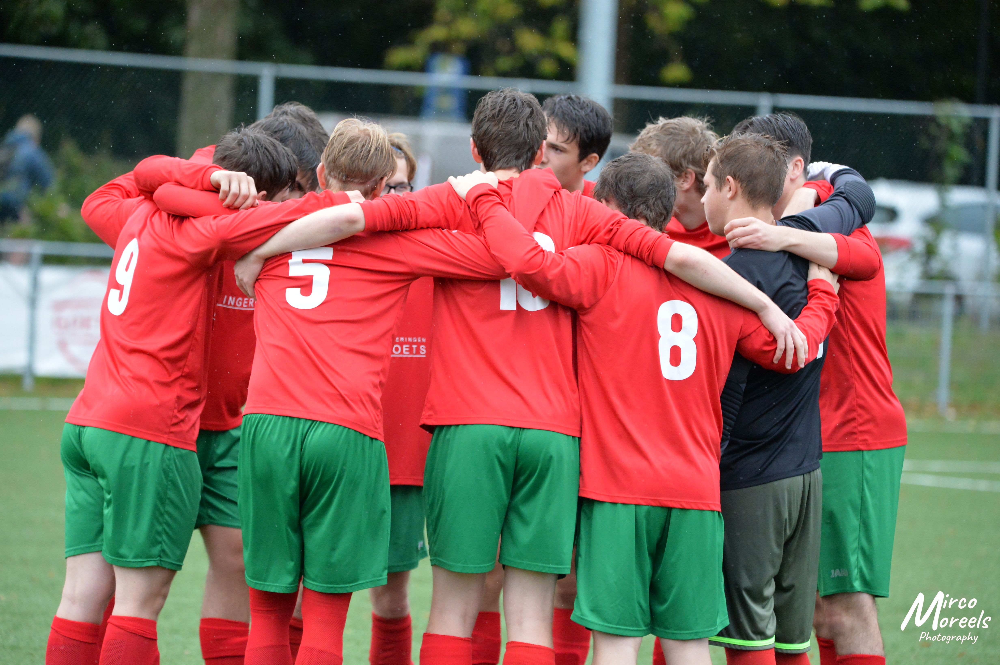
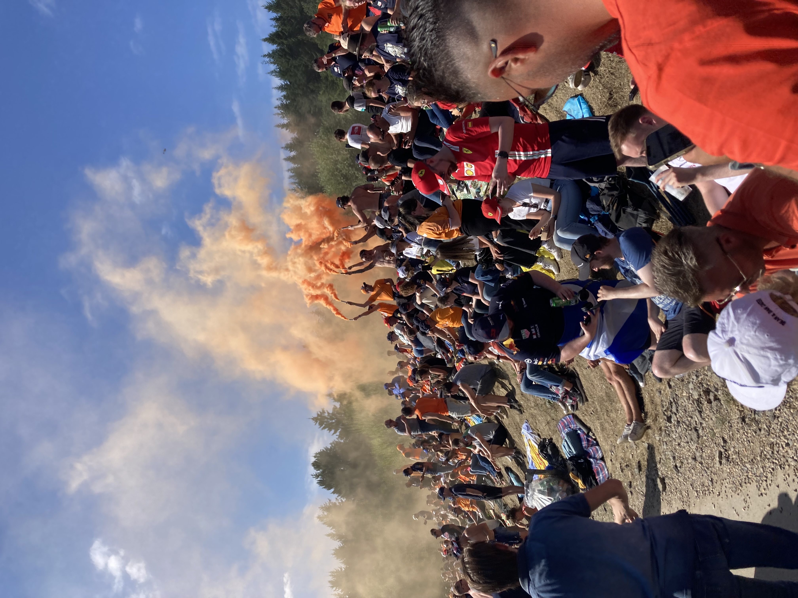

Hobby's & Interesses
Naast programmeren zijn sport en motorsport belangrijke interesses in mijn leven.
Voetbal bij KFC Lint
Voetbal is een van mijn grootste hobby’s. Ik speel bij KFC Lint en doe dit met veel plezier. Voor mij is voetbal meer dan alleen een sport. Het is ook een manier om samen te werken, discipline op te bouwen en mezelf fysiek en mentaal uit te dagen.
Tijdens het voetballen leer ik hoe belangrijk communicatie, inzet en doorzettingsvermogen zijn. In een ploeg moet iedereen samenwerken om een goed resultaat neer te zetten. Dat spreekt mij erg aan, omdat ik ook in andere situaties graag doelgericht werk.

Interesse in Formule 1
Een andere grote interesse van mij is Formule 1. Wat mij hierin vooral aanspreekt, is de combinatie van snelheid, techniek, strategie en precisie. Elke race draait niet alleen om snel rijden, maar ook om voorbereiding, samenwerking en het nemen van de juiste beslissingen op het juiste moment.
Ik volg Formule 1 graag omdat het mij inspireert. De focus op performance, detail en continue verbetering spreekt mij sterk aan. Diezelfde mindset vind ik ook belangrijk in mijn opleiding en in het bouwen van websites: stap voor stap werken, problemen oplossen en streven naar een sterk eindresultaat.

Sportief en gemotiveerd
Ik beschouw mezelf als een sportief persoon. Bewegen en actief bezig zijn geven mij energie en helpen mij om gemotiveerd te blijven. Sport leert mij om met doelen te werken en om vol te houden, ook wanneer iets moeilijker wordt.
Mijn hobby’s en interesses zeggen veel over wie ik ben. Voetbal toont mijn teamgeest en inzet, terwijl Formule 1 mijn interesse in techniek, structuur en performance weerspiegelt. Deze eigenschappen neem ik ook mee in mijn opleiding en in mijn groei als front-end developer.
Overzicht van mijn hobby’s en interesses
| Hobby / interesse | Waarom ik dit graag doe |
|---|---|
| Voetbal | Omdat ik graag in team speel en sportief bezig ben |
| Formule 1 | Door de combinatie van techniek, strategie en snelheid |
| Sport in het algemeen | Omdat beweging mij energie en motivatie geeft |